Theorem int_not_in_interval of type Forall¶
from the theory of proveit.numbers.number_sets.integers¶
see dependencies
In [1]:
import proveit
# Automation is not needed when only building an expression:
proveit.defaults.automation = False # This will speed things up.
proveit.defaults.inline_pngs = False # Makes files smaller.
%load_theorem_expr # Load the stored theorem expression as 'stored_expr'
# import the special expression
from proveit.numbers.number_sets.integers import int_not_in_interval
In [2]:
# check that the built expression is the same as the stored expression
assert int_not_in_interval.expr == stored_expr
assert int_not_in_interval.expr._style_id == stored_expr._style_id
print("Passed sanity check: int_not_in_interval matches stored_expr")
In [3]:
# Show the LaTeX representation of the expression for convenience if you need it.
print(int_not_in_interval.latex())
In [4]:
int_not_in_interval.style_options()
Out[4]:
In [5]:
# display the expression information
int_not_in_interval.expr_info()
Out[5]:
| core type | sub-expressions | expression | |
|---|---|---|---|
| 0 | Operation | operator: 1 operand: 3 | 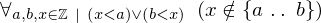 |
| 1 | Literal |  | |
| 2 | ExprTuple | 3 | 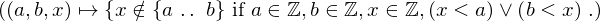 |
| 3 | Lambda | parameters: 4 body: 5 | 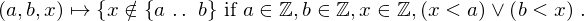 |
| 4 | ExprTuple | 31, 32, 33 | 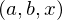 |
| 5 | Conditional | value: 6 condition: 7 | 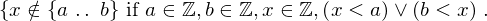 |
| 6 | Operation | operator: 8 operands: 9 | 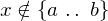 |
| 7 | Operation | operator: 10 operands: 11 | 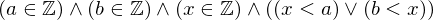 |
| 8 | Literal | 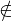 | |
| 9 | ExprTuple | 33, 12 | 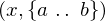 |
| 10 | Literal |  | |
| 11 | ExprTuple | 13, 14, 15, 16 | 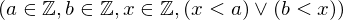 |
| 12 | Operation | operator: 17 operands: 18 |  |
| 13 | Operation | operator: 21 operands: 19 |  |
| 14 | Operation | operator: 21 operands: 20 |  |
| 15 | Operation | operator: 21 operands: 22 | 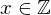 |
| 16 | Operation | operator: 23 operands: 24 | 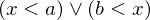 |
| 17 | Literal |  | |
| 18 | ExprTuple | 31, 32 |  |
| 19 | ExprTuple | 31, 25 | 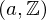 |
| 20 | ExprTuple | 32, 25 |  |
| 21 | Literal |  | |
| 22 | ExprTuple | 33, 25 | 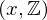 |
| 23 | Literal | ||
| 24 | ExprTuple | 26, 27 | 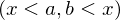 |
| 25 | Literal |  | |
| 26 | Operation | operator: 29 operands: 28 | 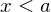 |
| 27 | Operation | operator: 29 operands: 30 | 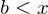 |
| 28 | ExprTuple | 33, 31 | 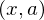 |
| 29 | Literal |  | |
| 30 | ExprTuple | 32, 33 |  |
| 31 | Variable |  | |
| 32 | Variable |  | |
| 33 | Variable |  |